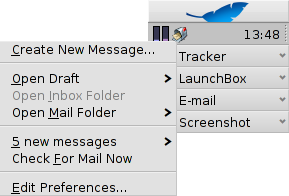

中文 ［中文］
中文 ［中文］ Français
Français Deutsch
Deutsch Italiano
Italiano Русский
Русский Español
Español Svensk
Svensk 日本語
日本語 Українська
Українська Português
Português English
English| 索引 |
|
新建邮箱账户 收件箱的设置 发件箱的设置 过滤器的设置 邮箱服务设置 |
 电子邮箱
电子邮箱
| 桌面栏： | ||
| 位置： | /boot/system/preferences/E-mail | |
| 设置： | ~/config/settings/Mail/* |
Haiku提供了邮件系统，它通过邮件服务（mail_daemon）检索电子邮箱，并且将邮件保存为单个文本文件。它将邮件分为几个部分，并且将所有必须的头信息保存为邮件属性，例如发件人，收件人，主题以及未读状态。目前所有的邮件可以被您或者任何的程序所查询。该系统还可以在保持所有的数据和配置不变的情况下，切换电子邮箱客户端。
邮箱的配置可以在电子邮箱首选项面板中完成。
 新建邮箱账户
新建邮箱账户
让我们开始了解有关邮箱账户的设置过程。
您可以点击 按钮新建一个未命名账户。它将会打开一个用于填写有关您的账户信息的面板：

首先，声明账户类型： ， ，或常用的 。然后您需要设置如何接收邮件， 或 。
接下来，输入您的 邮箱地址，登陆名 和 密码；之后，给出您的 账户名 以及 真实姓名，它们将在Haiku中始终可见。
如果您的账户来自于主要的电子邮箱提供商，Haiku已经知道了所有的技术细节，例如服务器IP地址，并且 下述信息已经被自动填写。如果不是这种情况，您只需要按照提示，填写邮箱账户的相应信息。
收件箱的设置
点击您的账户名下的 设置如何进行邮件的接收。

从弹出菜单中，选择您的提供商所使用的协议。目前支持的协议有 和 。
Next is the address for incoming mails. If your provider needs you to log into a specific port, you add that to the address, separated by a colon. For example, pop.your-provider.org:1400.
Then you enter your login information, Username and Password, and if necessary change the Login Type from the default to for authentication.
If you use POP3 and retrieve mails of this account from different computers, you may want to activate the option to and only locally.
If you use IMAP instead, you have the option to locally. You can specify a to only synchronize with a specific folder and its subfolders.
The offers different methods to announce the arrival of new mail. Try different settings to see what works best for you.
You can change the Location of your inbox (default: /boot/home/mail/in/), which is useful if you'd like to separate the mails from different accounts into their own folders. However, queries let you sort things out just as well.
Last on this page, you can opt to only that are larger than a certain size. This will only get the header and you can decide if you want to download the rest of the message plus possible attachments after seeing the subject and who sent it. Useful if you have a slow connection.
发件箱的设置
Click on under your account's name to set up how e-mails are sent.

As with incoming mail, you can also change the Location of your outbox (default: /boot/home/mail/out/).
Next is the SMTP Server address for outgoing mails. As with the incoming server before, you can use a specific port if needed, e.g. mail.your-provider.org:1200.
If you need to login, you change the Login Type to and enter username and password above. The other type is used for providers that need you to check for mail with for identification.
过滤器的设置
If you want to filter your incoming email, you click on under your account's name to set up automatic sorting. You can add any number of filters that are applied one after the other. You can rearrange them by drag&dropping them to their new position.
Besides the that's used for backward compatibility, there are two other you can add.
Spam Filter

The spam filter uses statistical methods to classify a mail as unwanted spam. It assigns a value between 0 and 1 to it and you can decide what are the limits for a genuine mail and what will be considered spam.
You can have that spam rating added to the start of the subject.
Also, the spam filter can learn from all incoming e-mail. Of course, you'll have to teach it by sorting out the false positives, mails that were mistakenly marked as spam. You'll find more on that when we discuss the application Mail.
Together with the following filter, you're able to automatically sort out detected spam mails.
Match Header

This filter compares a header to a search pattern and performs some action when it matches.
With the first text field you specify which header to check against. These are available:
| the name of the sender | ||
| the e-mail address of the sender | ||
| your e-mail address (different for each e-mail account) | ||
| the e-mail address replies are sent to | ||
| the date and time the mail was received | ||
| the subject line | ||
| addresses of anyone receiving a carbon copy (Cc) | ||
| the name of the e-mail's account | ||
| The current status of the e-mail. Normally, this can be "Read", "Replied", "Sent", "Forwarded", "New", or anything you have defined yourself. However, unless you change it yourself in a filter, it will always be "New" after the Mail Service fetched the mail. | ||
| is set by the sender's e-mail program (e.g. "urgent") | ||
| essentially the same as "Subject", but without things like Re: or Fwd: | ||
| depending on what the spam filter classified it as, this will either be empty (if uncertain) or contain the word "Genuine" or "Spam" | ||
| this is a numerical estimate that the spam filter assigned to the e-mail. They are shown in scientific notation, where 1.065e-12 translates to 1.065 divided by 10 to the 12th power, which in this case translates to 0.000000000001065. |
The second text field holds your search pattern. It accepts regular expressions which gives it great flexibility, while unfortunately complicating things a bit. Read up on it a bit, it's well worth it and simple search patterns aren't that complicated at all.
With the pop-up menu below it, you assign an action when the pattern matches. You can move or delete a mail, set the status to "Read" or anything else or set the e-mail account you'll reply with.
Outgoing Mail Filters
At this moment, there's only one filter that deals with outgoing mail: fortune.
It will attach a randomly chosen funny or wise "fortune cookie" to the end of every mail before it's sent out. You can do a dry run by issuing the command fortune in a Terminal.
邮箱服务设置
Now that your incoming and outgoing mail servers (and maybe some filters, too), are configured, you have to tell the Mail Service that does all the actual checking and fetching how to do its job.

Under Mail Checking you configure the interval at which the account's mail server is probed for new mail.
If you're on a dial-up connection, you may want to do that and also to avoid dialing automatically in regularly only to check for mail.
The Mail Service has a status window which you can set to show up , , or .
Make sure to or there will be no mail_daemon running to do your bidding...
will open the folder /boot/home/config/Mail/Menu Links/. All folders or queries (!) or their links put into this folder will appear in the context menu of the mailbox icon of the Mail Services in the Deskbar tray.
From that menu, you can also , or .
The mailbox icon itself shows if there are unread messages (status "New") when there are envelopes inside.